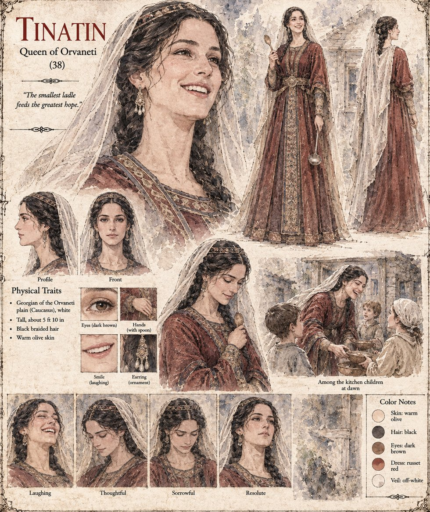

Tinatin
Queen of Orvaneti · wife of Orvan, mother of Mirdat · keeper of a small wooden spoon · dies in the first week of Averin of the thirteenth year · 38 on her sheet
The manuscript gives her a few lines: a tall, laughing woman named Tinatin, who kept a small wooden spoon in her sleeve, queen at Dzirvali to Orvan. In the winter the plain starves she goes every morning to the palace kitchens and stands among the children who come for the broth, and takes the smallest ladle for herself. She dies in the first week of Averin of what the physicians call a wasting and the kitchen children call something plainer. Her son, eleven, holds the wooden spoon in his fist at his father’s weeping and keeps it for the rest of his life.
The spoon outlives her. Her son carries it in his sleeve at his crowning and keeps it by his elbow at the table where he reads the Hierarch’s folio. In the famine year the palace cook gives the broth out by the smallest ladle as the old queen had once done, and the king begins, without announcement, to send his own portion down to the yard door, as his mother had; on the last Uncounted Day he eats less than the kitchen children do. At his death the manuscript gives him her ending: the physicians call his decline a wasting, the kitchen children called it by a plainer name. The spoon lies beside his hand. He puts it into Ketevan’s and asks her to give it to the kitchens; it is there still, in a drawer among the ladles, and nobody knows what it is for.
The manuscript gives her tallness, her laughter, her spoon, her ladle and her death, and no age, face or colouring. The sheet’s age of 38, height of about 5 ft 10 in, black braided hair, warm olive skin, dark brown eyes, pearl-drop earrings, circlet and off-white veil over a russet-red embroidered dress are its own, as are its panels Laughing, Thoughtful, Sorrowful and Resolute and its scene Among the kitchen children at dawn. The line it prints for her, The smallest ladle feeds the greatest hope., is not in the manuscript.
“who kept a small wooden spoon in her sleeve”